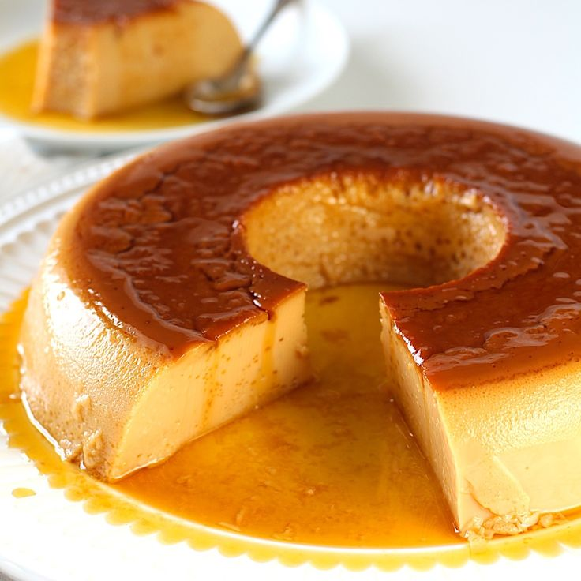

Pudim (Brazilian Flan) Recipe

Description
Pudim is a creamy Brazilian flan with a rich caramel topping—simple, smooth, and irresistible!
Ingredients
For the Caramel:
- 1 cup (200g) granulated sugar
- ½ cup (120ml) water
For the Flan:
- 1 can (395g) sweetened condensed milk
- 2 cups (500ml) whole milk
- 3 large eggs
- 1 tsp vanilla extract (optional)
Steps
Make the Caramel:
- In a medium saucepan, add the sugar and water. Heat over medium heat without stirring until the sugar dissolves and turns a golden caramel color.
- In a medium saucepan, add the sugar and water. Heat over medium heat without stirring until the sugar dissolves and turns a golden caramel color.
Prepare the Flan Mixture:
- In a blender, combine the sweetened condensed milk, whole milk, eggs, and vanilla extract (if using). Blend for 1–2 minutes until smooth.
- Pour the mixture over the hardened caramel in the mold.
Cook the Pudim:
- Preheat your oven to 350°F (175°C).
- Place the mold in a larger baking pan. Fill the larger pan with hot water, creating a water bath (bain-marie).
- Bake for 60–70 minutes, or until the flan is set but still slightly jiggly in the center.
Cool and Serve:
- Remove the mold from the water bath and let it cool to room temperature.
- Refrigerate for at least 4 hours (or overnight) to set completely.
- To serve, run a knife around the edges of the flan, place a plate over the mold, and carefully flip it over to release the pudim.
Enjoy
- Serve chilled and enjoy the creamy, caramel goodness!